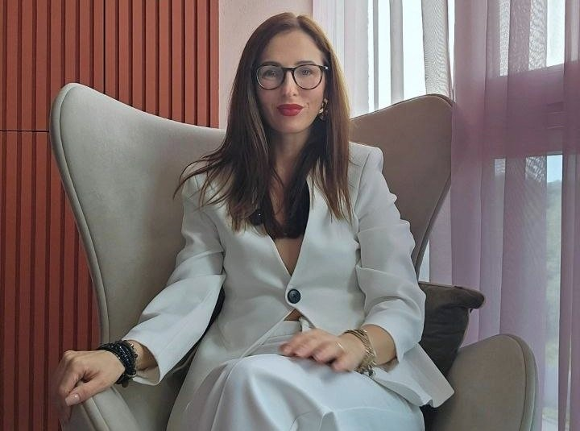
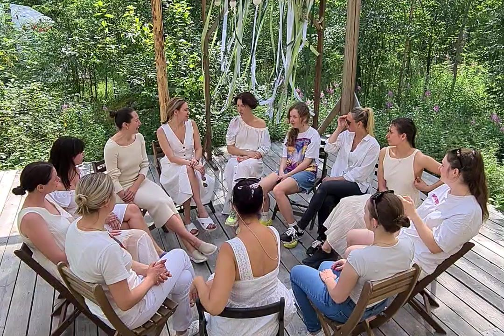
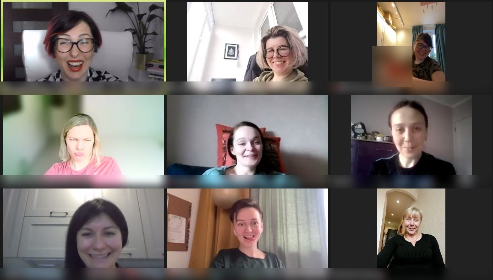
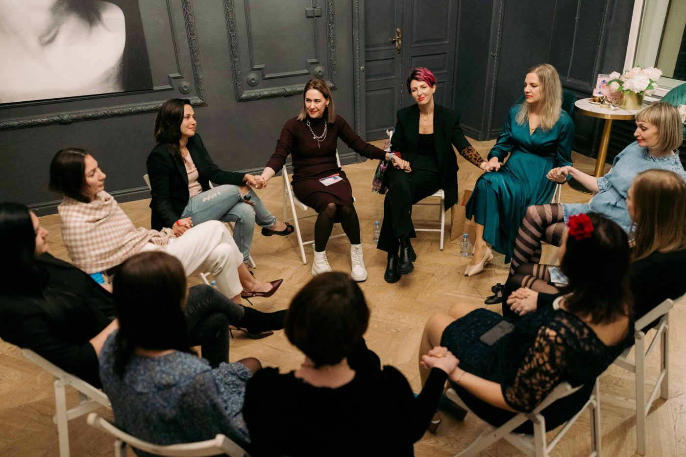
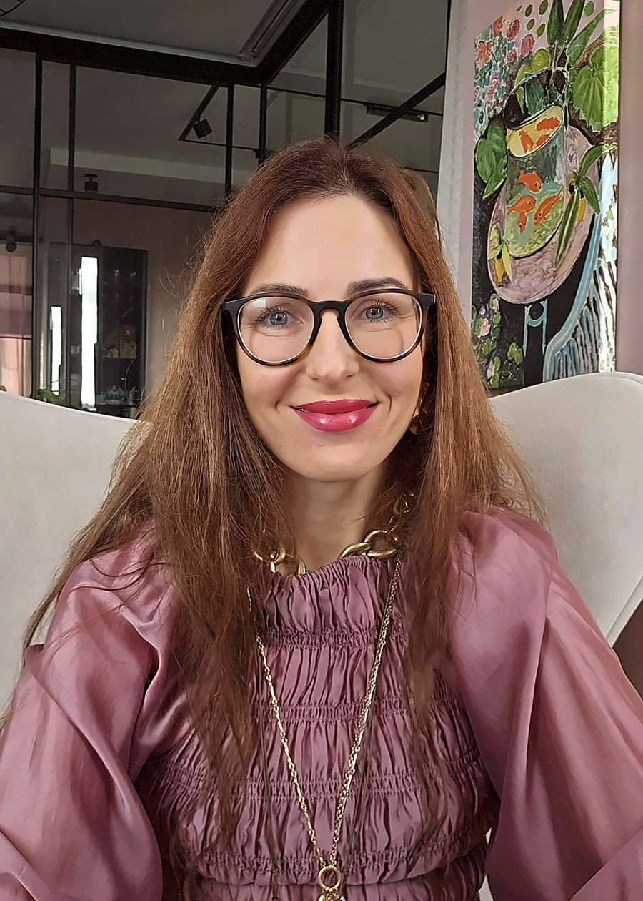
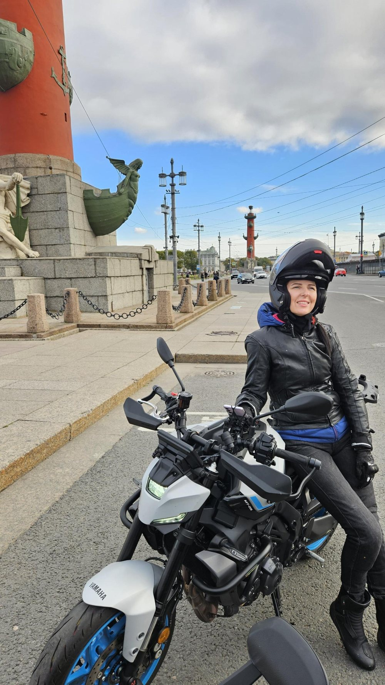
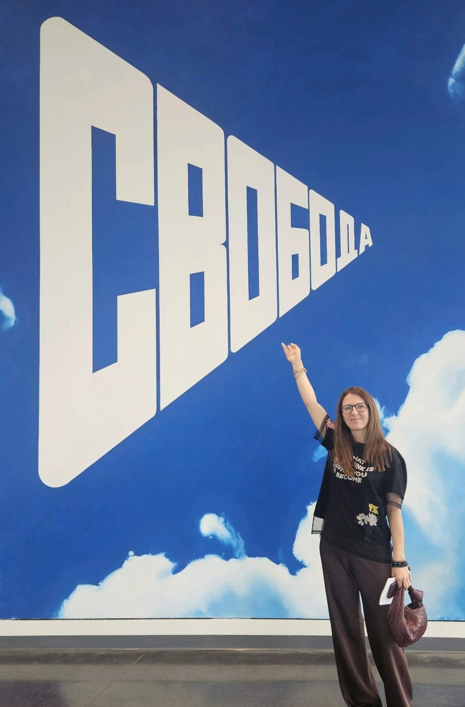

Родители, дети, родня
Семья и близкие
Люблю их, но после каждой встречи без сил.
- сложно с родителями или роднёй партнёра
- отношения со взрослыми детьми или подростком
- одни и те же семейные сценарии из поколения в поколение
Работаю с женщинами и мужчинами любого возраста, с парами и семьями. Неважно, кем вы работаете и сколько зарабатываете. Важно, что с вами происходит.

Галина Фомина
Форматы и цены
Договор всегда на один формат: личная работа, работа с парой или с семьёй. Какой подходит вам, решим на знакомстве или диагностике.
0 ₽
20 минут
Короткий разговор: что вас беспокоит, как я работаю, подходим ли мы друг другу.
Записаться5 000 ₽
50 минут
Разбор ситуации и системы, один конкретный шаг и рекомендация по формату.
Записаться на диагностику5 000 ₽
когда есть конкретный запрос
Консультация семейного психолога, сексолога или психолога по вашему вопросу. Для одного человека.
Записаться8 000 ₽
90 минут
Парная терапия или совместная консультация сексолога. Мой клиент здесь — ваша пара.
Записаться10 000 ₽
90 минут
Для родителей и взрослых детей, для нескольких членов семьи. Я на стороне всей семейной системы.
Записатьсясертификат
на знакомство, диагностику или сессию
Для партнёра, подруги, взрослого ребёнка. Напишите мне, и я пришлю сертификат.
Хочу подарить10 сессий для тех, кто готов не латать, а пересобрать отношения: в паре, в семье или с самим собой.
45 000 ₽
Узнать про пакетДля тех, у кого сейчас решается многое сразу: бизнес, семья, переезд, большие решения. Целый год я рядом: регулярные сессии и связь в мессенджере каждый день, когда нужно свериться, разобрать ситуацию или принять решение.
500 000 ₽ / год
Оставить заявкуФормат не заменяет экстренную помощь. В кризисной ситуации звоните 112.
Перенести или отменить встречу можно не позднее чем за 48 часов, иначе она считается состоявшейся. Условия оплаты и возврата в публичной оферте. Детей и подростков я не консультирую: работаю со взрослыми, парами и семьями.
Первый шаг
Одна встреча, после которой понятно, что происходит, где точка напряжения и с чего начать. Подходит для любой темы: семья, пара, работа, состояние. Без обязательств продолжать терапию.
Диагностика
5 000 ₽ · 50 минут
Записаться на диагностику →Не уверены, нужна ли диагностика? Начните с бесплатного знакомства на 20 минут.
Выберите свою тему
Найдите то, что больше всего похоже на вашу ситуацию. Нажмите Это про меня, и тема сама подставится в заявку.
Родители, дети, родня
Люблю их, но после каждой встречи без сил.
Вы и партнёр
Хочу уйти и боюсь. Хочу остаться и тоже боюсь.
Деликатно
Со мной что-то не так или с нами?
Внутреннее состояние
Внешне всё нормально, а внутри не отпускает.
Отношения с собой
Я сам себе главный критик.
Работа и своё дело
Все решения на мне, и не с кем это обсудить.
Когда жизнь меняется
Старая жизнь закончилась, а новая не началась.
Будущие и молодые родители
Мы стали родителями и перестали быть парой.
Начать отсюда
Просто плохо, и я не могу это сформулировать.
Группы
Группы для женщин и для мужчин, очно в Петербурге и онлайн в Zoom из любой страны, плюс летний выездной ретрит. В группе слышишь, что другие проживают то же самое, и пробуешь новое среди людей, которые понимают. И это дешевле личной терапии.
Оставьте заявку и напишите, какая группа интересна: женская, мужская, онлайн или ретрит. Я пришлю в личные сообщения даты, место и стоимость.
Записаться в группуЕсли набор закрыт, поставлю вас в лист ожидания и напишу, когда откроется следующий.
Новая группа
Для мужчин, которых предали, бросили или с которыми поступили жестоко. Которые больше не верят, но всё ещё хотят любить. Первые 6 месяцев только мужчины: прожить то, что случилось, вернуть опору и уверенность. Следующие 6 месяцев вместе с женской группой: разобраться, какой я в отношениях, чтобы не попасть в такую историю снова.
Человеку нужен человек.
По данным исследований, групповая терапия в целом так же эффективна, как индивидуальная, и при этом доступнее по цене.



Истории из практики
Реальные истории моих клиенток. Хочу выразить огромную благодарность моим сильным женщинам и парам, которые согласились рассказать свои истории.
Анна, 39 · Личная терапия
Читать кейс →Света, 37 · Личная терапия
Читать кейс →Юля · Личная терапия
Читать кейс →Аня · Личная терапия
Читать кейс →Маргарита · Несколько консультаций
Читать кейс →Марина · Групповая терапия
Читать кейс →Вита, 37 · Пакет Пересборка, 10 сессий
Читать кейс →Клиентка, 50 · Пакет Пересборка, 10 сессий
Читать кейс →Наташа, 32 · Личная терапия
Читать кейс →Вика, 45 · Личная терапия и группа
Читать кейс →Имена изменены. Истории опубликованы с согласия клиенток.
По этой теме историй пока нет. Приходите на бесплатное знакомство, и мы поговорим именно о вашей ситуации.
Отзывы
Слова клиентов и участниц групп. Имена убраны, текст сохранён, исправлены только опечатки.
Я считала себя состоявшейся: хорошее образование, успех в профессии, любящий муж, трое детей, финансовая независимость. Но не чувствовала себя счастливой. Оказалось, надо работать с накопившимися обидами, тревогой, злостью. Порой это больно. Но я стала счастливой. И люди рядом со мной тоже.
Такого облегчения у меня не было давно. Начала смотреть на вещи другими глазами и чувствовать по-другому. Ты как большое мягкое одеяло, которое согрело.
У меня как груз спал. Я реально отделилась от родителей. Я это я, они это они. И мне не стыдно, что они такие, а я другая. Я достойна самого лучшего.
Я скептически шла: сейчас у всех одни марафоны, это даже раздражает. Но тебе я верю и пошла.
Для многих я стала невыносима, потому что стала жутко неудобной. Раньше со мной бери и делай что хочешь. А сейчас нет.
Я теперь в большинстве случаев могу понять, что чувствуют окружающие, и мне не стыдно сказать, что чувствую я. Стало значительно легче в общении.
Так круто ощущать себя деревом, не опираясь ни на кого. Мне понадобилось несколько лет: сначала осознание и навык хотя бы слышать себя, маленькие шаги, потом знания и принятие.
Раскопав и поняв свою обиду, я отпустила её и осталась такой же классной. Оказалось, простить проще, чем мне казалось. Да, три дня и ночи проревела, но оно того стоило.
Нет больше такого животного страха и бьющей тревоги, когда я в настоящем. Жизнь какая-то наполненная, хотя я делаю всё как обычно.
Пришло самое главное понимание: если больно, надо говорить. Меня всю жизнь учили обратному. Начала прислушиваться к себе.
Не устаю тебя благодарить за пендели и за правду.
Я очень переживала, что не справлюсь и испугаюсь. Но впервые сама всё организовала и говорила без страха и нервной дрожи. Мне было спокойно, я делала это, потому что хотела.
Я думала, что заплачу и мне дадут таблетку, которая избавит от всех проблем. Но оказалось, что нужно ещё работать над собой.
С тобой можно поговорить на такие темы, на которые с родителями было сложно говорить. Из-за этого я долго не могла быть открытой. С тобой могу научиться свободе.
За короткое время я научилась мечтать, а не отгонять мечты словами вот размечталась. Расслаблять тело: вечно забитые мышцы плеч и шеи могут расслабляться. И различать эмоции и понимать, откуда они приходят.


Обо мне
Я психолог, семейный и парный терапевт, гештальт-терапевт, сексолог и юрист по первому образованию. 7 лет в практике. Ко мне приходят женщины и мужчины, пары и семьи, предприниматели и люди самых разных профессий.
Я выросла в бедной семье в девяностые и построила ту семью, о которой мечтала. С мужем мы вместе 19 лет. За это время было около двадцати переездов, семь лет жизни в Европе, двое дочерей и даже психологический развод: заявление, юрист, раздел денег, полгода порознь. Мы вернулись друг к другу. Поэтому я знаю изнутри, что такое стоять на развилке остаться или уйти.
Мне важно, чтобы в кабинете мы говорили прямо. В паре я на стороне пары, в семье на стороне всей системы, в личной работе на вашей стороне. Готовых рецептов не даю: мы вместе смотрим, как всё устроено и что можно поменять.
В жизни я люблю скорость и свободу: езжу на мотоцикле, ныряю с аквалангом, прыгала с парашютом и летала на параплане. Настоящий выбор всегда немного страшный, и я это хорошо знаю.
— А вы точно психолог?
— Точно. Вот:
Документы
Нажмите на документ, чтобы открыть его крупно.
Где меня послушать
Я была гостем подкаста Алексея Скакуна. Если сомневаетесь, стоит ли мне писать, посмотрите выпуск: станет понятно, как я работаю и как разговариваю с людьми.

Во что я верю
Цель терапии не в том, чтобы сохранить что-то любой ценой. А в том, чтобы у вас появилась свобода выбирать.
Остаться и строить иначе или уйти бережно и без войны. Сменить работу или остаться и поменять своё отношение к ней. Решение за вами, я помогаю увидеть его ясно.
Как проходит работа
01
20 минут бесплатно. Рассказываете, что беспокоит, я объясняю, как могу помочь.
02
50 минут. Разбираем ситуацию целиком, вы получаете первый конкретный шаг.
03
Консультация по конкретному вопросу, работа для пары или семьи, пакет Пересборка.
04
Обычно раз в неделю. Изменения становятся заметны уже через несколько недель.
Вопросы
Да. Ко мне приходят мужчины, в том числе предприниматели и руководители: с вопросами о семье, отношениях, напряжении на работе и решениях, которые не с кем обсудить. Говорим прямо и по делу.
Да. Когда меняется один человек, меняется и вся система. Если со временем понадобится работа в паре, я порекомендую коллегу: так у каждого из вас будет равное место, и никто не окажется в гостях у чужого терапевта.
Да. Тревога, самооценка, выгорание, карьера, переезд, кризис — со всем этим я работаю в личной терапии. Выберите свою тему выше или приходите на бесплатное знакомство.
Это нормальное чувство, с него часто всё и начинается. Мы идём в вашем темпе, и вы сами решаете, о чём и насколько подробно говорить.
Нет. В парной терапии мой клиент — ваша пара, в семейной — вся семья. Я слежу, чтобы у каждого было место и голос.
Да. Всё, что звучит на встречах, остаётся между нами. Супервизия проходит анонимно, без имён и деталей, по которым можно узнать человека.
Иногда достаточно диагностики и нескольких консультаций. Глубинные изменения обычно требуют от 10 встреч, для этого есть пакет Пересборка. Точнее скажу после диагностики.
По видеосвязи в Zoom. Нужен стабильный интернет и место, где вас никто не услышит. Работаю с клиентами в разных часовых поясах.
Нет, я работаю со взрослыми, парами и семьями. Если вас беспокоят отношения с ребёнком или подростком, можно прийти вам как родителю.
Запись и контакты
Напишите в удобный мессенджер или оставьте заявку. Отвечу в течение дня и предложу время.